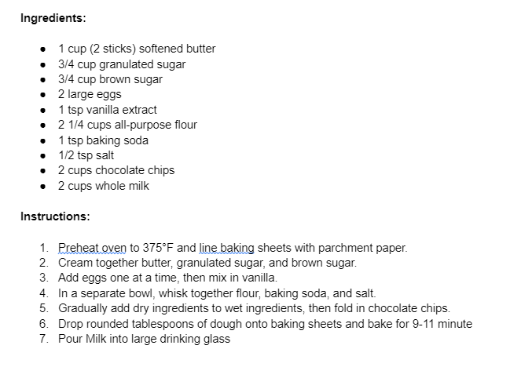

Santa Clause typically has some serious ground to cover on Christmas Eve. Having to deliver billions of gifts every year, he needs some fuel to keep him going. I am not talking about gasoline or electricity for his sleigh, but instead some milk and cookies for his soul. This is the perfect recipe that will help good ol’ Saint Nick get up and down the chimney in no time. Not only is it good Santa Fuel, but it is also good family fuel. There really is nothing like enjoying some good chocolate chip cookies and a glass of milk with the family during the holidays. - Sam Rafferty
